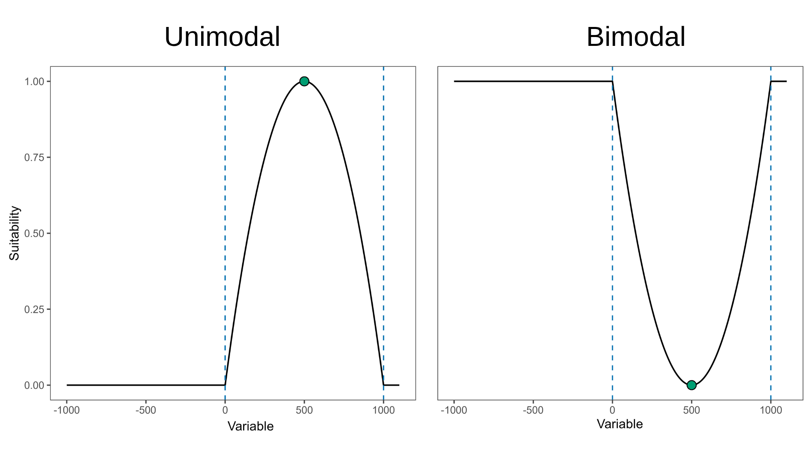

model_calibration.RmdModel calibration is the most computationally challenging process
automated in kuenm2. In this step, candidate models are
trained and tested using a k-fold cross-validation approach. Then,
models are selected based on multiple criteria to warranty that the
models used in later steps are the most robust among the candidates. The
main function used in this step is calibration().
To start the calibration process, we need a
prepared_data object. For more details in data preparation,
please refer to the vignette prepare data
for model calibration.
To start, let’s create two prepared_data object: one
using the maxnet as algorithm, and another with GLM:
#Load packages
library(kuenm2)
library(terra)
#> terra 1.8.54
# Import occurrences
data(occ_data, package = "kuenm2")
# Import raster layers
var <- rast(system.file("extdata", "Current_variables.tif", package = "kuenm2"))
# Prepare data for maxnet model
d_maxnet <- prepare_data(algorithm = "maxnet",
occ = occ_data,
x = "x", y = "y",
raster_variables = var,
species = "Myrcia hatschbachii",
categorical_variables = "SoilType",
n_background = 300,
features = c("l", "q", "lq", "lqp"),
r_multiplier = c(0.1, 1, 2))
# Prepare data for glm model
d_glm <- prepare_data(algorithm = "glm",
occ = occ_data,
x = "x", y = "y",
raster_variables = var,
species = "Myrcia hatschbachii",
categorical_variables = "SoilType",
n_background = 300,
features = c("l", "q", "lq", "lqp"))The calibration() function fits and evaluates candidate
models considering the follow metrics:
In summary, to calibrate and evaluate the models, the function
requires a prepared_data object and the following
definitions:
Optional arguments allow for modifications such as changing the delta
AIC threshold for model selection (default is 2), determining whether to
add presence samples to the background (default is TRUE),
and whether to employ user-specified weights. For a comprehensive
description of all arguments, refer to ?calibration.
In this example, we will evaluate the models considering two omission
errors (5% and 10%), with model selection based on the 5% omission
error. To improve computational speed, you can set parallel
to TRUE and specify the number of cores to utilize; the
candidate models will be distributed among these cores. To detect the
number of available cores on your machine, run
parallel::detectCores().
Let’s calibrate the maxnet models:
#Calibrate maxnet models
m_maxnet <- calibration(data = d_maxnet,
error_considered = c(5, 10),
omission_rate = 5,
parallel = FALSE, #Set TRUE to run in parallel
ncores = 1) #Define number of cores to run in parallel
# Task 1/1: fitting and evaluating models:
# |=====================================================================| 100%
#
# Model selection step:
# Selecting best among 300 models.
# Calculating pROC...
#
# Filtering 300 models.
# Removing 0 model(s) because they failed to fit.
# 153 models were selected with omission rate below 5%.
# Selecting 2 final model(s) with delta AIC <2.
# Validating pROC of selected models...
# |=====================================================================| 100%
# All selected models have significant pROC values.The calibration() function returns a
calibration_results object, a list containing various
essential pieces of information from the model calibration process. The
elements of the calibration_results object can be explored
by indexing them. For example, all evaluation metrics are stored within
the calibration_results element:
# See first rows of the summary of calibration results
head(m_maxnet$calibration_results$Summary[,c("ID", "Omission_rate_at_10.mean", "AICc",
"Is_concave")])
#> ID Omission_rate_at_10.mean AICc Is_concave
#> 1 1 0.0785 564.6870 FALSE
#> 2 2 0.0785 564.7657 FALSE
#> 3 3 0.0785 564.7059 FALSE
#> 4 4 0.1571 574.4960 FALSE
#> 5 5 0.1378 574.4347 FALSE
#> 6 6 0.1170 574.4141 FALSEWe can also examine the details of the selected models:
# See first rows of the summary of calibration results
m_maxnet$selected_models[,c("ID", "Formulas", "R_multiplier",
"Omission_rate_at_10.mean", "AICc", "Is_concave")]
#> ID Formulas
#> 159 159 ~bio_1 + bio_7 + I(bio_1^2) + I(bio_7^2) -1
#> 189 189 ~bio_1 + bio_7 + bio_12 + I(bio_1^2) + I(bio_7^2) + I(bio_12^2) -1
#> R_multiplier Omission_rate_at_10.mean AICc Is_concave
#> 159 0.1 0.0577 528.3151 FALSE
#> 189 0.1 0.0577 527.8733 FALSEWhen printed, the calibration_results object provides a
summary of the model selection process. This includes the total number
of candidate models considered, the number of models that failed to fit,
and the number of models exhibiting concave curves (along with an
indication of whether these were removed). Additionally, it reports the
number of models excluded due to non-significant partial ROC (pROC)
values, high omission error rates, or elevated AIC values. Finally, a
summary of the metrics for the selected models is presented.
print(m_maxnet)
#> calibration_results object summary (maxnet)
#> =============================================================
#> Species: Myrcia hatschbachii
#> Number of candidate models: 300
#> - Models removed because they failed to fit: 0
#> - Models identified with concave curves: 35
#> - Model with concave curves not removed
#> - Models removed with non-significant values of pROC: 0
#> - Models removed with omission error > 5%: 147
#> - Models removed with delta AIC > 2: 151
#> Selected models: 2
#> - Up to 5 printed here:
#> ID Formulas
#> 159 159 ~bio_1 + bio_7 + I(bio_1^2) + I(bio_7^2) -1
#> 189 189 ~bio_1 + bio_7 + bio_12 + I(bio_1^2) + I(bio_7^2) + I(bio_12^2) -1
#> Features R_multiplier pval_pROC_at_5.mean Omission_rate_at_5.mean dAIC
#> 159 lq 0.1 0 0.0192 0.4418045
#> 189 lq 0.1 0 0.0192 0.0000000
#> Parameters
#> 159 3
#> 189 5In this example, of the 300 candidate maxnet models fitted, two was selected based on a significant pROC value, a low omission error (<10%), and a low AIC score (<2).
Now, let’s calibrate the GLM Models to see if with this algorith we achieve different selected models:
#Calibrate maxnet models
m_glm <- calibration(data = d_glm,
error_considered = c(5, 10),
omission_rate = 5,
parallel = FALSE, #Set TRUE to run in parallel
ncores = 1) #Define number of cores to run in parallel
# Task 1/1: fitting and evaluating models:
# |=====================================================================| 100%
# Model selection step:
# Selecting best among 100 models.
# Calculating pROC...
#
# Filtering 100 models.
# Removing 0 model(s) because they failed to fit.
# 50 models were selected with omission rate below 5%.
# Selecting 1 final model(s) with delta AIC <2.
# Validating pROC of selected models...
# |=====================================================================| 100%
# All selected models have significant pROC values.Now, instead of two selected models, we have only one:
m_glm
#> calibration_results object summary (glm)
#> =============================================================
#> Species: Myrcia hatschbachii
#> Number of candidate models: 100
#> - Models removed because they failed to fit: 0
#> - Models identified with concave curves: 18
#> - Model with concave curves not removed
#> - Models removed with non-significant values of pROC: 0
#> - Models removed with omission error > 5%: 50
#> - Models removed with delta AIC > 2: 49
#> Selected models: 1
#> - Up to 5 printed here:
#> ID
#> 86 86
#> Formulas
#> 86 ~bio_1 + bio_7 + bio_15 + I(bio_1^2) + I(bio_7^2) + I(bio_15^2) + bio_1:bio_7 + bio_1:bio_15 + bio_7:bio_15
#> Features pval_pROC_at_5.mean Omission_rate_at_5.mean dAIC Parameters
#> 86 lqp 0 0.0192 0 9It is worth noting that with both maxnet and glm algorithm, some models were identified as having concave curves. Concave (or bimodal) curves indicate that the peak suitability is found at the extremes of the variable range. For example, as shown in the right panel of the figure below, higher suitability is observed in both the driest and wettest regions, with lower suitabilities occurring at intermediate precipitation levels.

In our example, none of the selected models have concave curves:
#Selected maxnet models
m_maxnet$selected_models[,c("ID", "Formulas", "Is_concave")]
#> ID Formulas
#> 159 159 ~bio_1 + bio_7 + I(bio_1^2) + I(bio_7^2) -1
#> 189 189 ~bio_1 + bio_7 + bio_12 + I(bio_1^2) + I(bio_7^2) + I(bio_12^2) -1
#> Is_concave
#> 159 FALSE
#> 189 FALSE
#Selected glm models
m_glm$selected_models[,c("ID", "Formulas", "Is_concave")]
#> ID
#> 86 86
#> Formulas
#> 86 ~bio_1 + bio_7 + bio_15 + I(bio_1^2) + I(bio_7^2) + I(bio_15^2) + bio_1:bio_7 + bio_1:bio_15 + bio_7:bio_15
#> Is_concave
#> 86 FALSEHowever, occasionally, a model with concave curves might be selected
if it has sufficiently low omission rate and AIC values. To
ensure that none of the selected models have concave
curves, you can set remove_concave = TRUE within
the calibration() function. Let’s test it with the maxnet
algorithm:
m_unimodal <- calibration(data = d_maxnet,
remove_concave = TRUE, # Ensures concave models are not selected
error_considered = c(5, 10),
omission_rate = 5)
# Task 1/2: checking for concave responses in models:
# |=====================================================================| 100%
#
# Task 2/2: fitting and evaluating models with no concave responses:
# |=====================================================================| 100%
#
# Model selection step:
# Selecting best among 370 models.
# Calculating pROC...
#
# Filtering 370 models.
# Removing 0 model(s) because they failed to fit.
# Removing 105 model(s) with concave curves.
# 129 models were selected with omission rate below 5%.
# Selecting 2 final model(s) with delta AIC <2.
# Validating pROC of selected models...
# |=====================================================================| 100%
# All selected models have significant pROC values.Note that the process is now divided into two tasks:
Task 1/2: Only candidate models that include quadratic terms are fitted. For Maxent models (using the maxnet algorithm), the function first fits the candidate model with the highest regularization multiplier (e.g., 5) for each formula. This approach is used because if a particular formula produces a concave response at a high regularization value, it will also produce concave responses at lower regularization values. By checking the model with the highest regularization first, the function can skip fitting the other models with the same formula but lower regularization values, saving time and computation.
Task 2/2: In this step, the function fits and evaluates two groups of models:
The model selection procedure is conducted internally during the calibration process. However, it is possible to re-select models by considering other omission rates (since these were calculated during calibration), model complexity (delta AIC) and concave curves.
By default, calibration() calculates pROC values only
for the selected models to optimize computational time. Consequently,
pROC values for non-selected models are filled with NA.
# See first rows of the summary of calibration results (pROC values)
head(m_maxnet$calibration_results$Summary[,c("ID", "Mean_AUC_ratio_at_10.mean",
"pval_pROC_at_10.mean")])
#> ID Mean_AUC_ratio_at_10.mean pval_pROC_at_10.mean
#> 1 1 NA NA
#> 2 2 NA NA
#> 3 3 NA NA
#> 4 4 NA NA
#> 5 5 NA NA
#> 6 6 NA NA
# See pROC values of selected models
m_maxnet$selected_models[,c("ID", "Mean_AUC_ratio_at_10.mean",
"pval_pROC_at_10.mean")]
#> ID Mean_AUC_ratio_at_10.mean pval_pROC_at_10.mean
#> 159 159 NA NA
#> 189 189 NA NAWhen pROC is not calculated for all models during
calibration(), the select_models() function
requires the prepared_data used during the calibration
step, and compute_proc must be set to
TRUE.
For instance, let’s re-select the maxnet models from the calibration results, applying an omission rate of 10% instead 5%:
#Re-select maxnet models
new_m_maxnet <- select_models(calibration_results = m_maxnet,
data = d_maxnet, #Necessary for computing pROC
compute_proc = TRUE,
omission_rate = 10) # New omission rate
#> Selecting best among 300 models.
#> Calculating pROC...
#>
#> Filtering 300 models.
#> Removing 0 model(s) because they failed to fit.
#> 156 models were selected with omission rate below 10%.
#> Selecting 1 final model(s) with delta AIC <2.
#> Validating pROC of selected models...
#>
#> All selected models have significant pROC values.
print(new_m_maxnet)
#> calibration_results object summary (maxnet)
#> =============================================================
#> Species: Myrcia hatschbachii
#> Number of candidate models: 300
#> - Models removed because they failed to fit: 0
#> - Models identified with concave curves: 35
#> - Model with concave curves not removed
#> - Models removed with non-significant values of pROC: 0
#> - Models removed with omission error > 10%: 144
#> - Models removed with delta AIC > 2: 155
#> Selected models: 1
#> - Up to 5 printed here:
#> ID Formulas
#> 192 192 ~bio_1 + bio_7 + bio_15 + I(bio_1^2) + I(bio_7^2) + I(bio_15^2) -1
#> Features R_multiplier pval_pROC_at_10.mean Omission_rate_at_10.mean dAIC
#> 192 lq 0.1 0 0.0769 0
#> Parameters
#> 192 5If a calibration_results object is provided,
select_models() will return a
calibration_results output with the selected models and
summary updated. Note that we now have only 1 model selected with the
maxnet algoritm:
new_m_maxnet$selected_models[,c("ID", "Formulas", "R_multiplier",
"Omission_rate_at_5.mean", "Mean_AUC_ratio_at_10.mean",
"AICc", "Is_concave")]
#> ID Formulas
#> 192 192 ~bio_1 + bio_7 + bio_15 + I(bio_1^2) + I(bio_7^2) + I(bio_15^2) -1
#> R_multiplier Omission_rate_at_5.mean Mean_AUC_ratio_at_10.mean AICc
#> 192 0.1 0.0769 1.434188 522.9691
#> Is_concave
#> 192 FALSEYou can also provide a data.frame containing the
evaluation metrics for each candidate model directly to
select_models(). This data.frame is available
in the output of the calibration() function under
object$calibration_results$Summary. In this case, the
function will return a list containing the selected models along with
summaries of the model selection process.
#Re-select models using data.frame
new_summary <- select_models(candidate_models = m_maxnet$calibration_results$Summary,
data = d_maxnet, #Necessary for computing pROC
compute_proc = TRUE,
omission_rate = 10)
#> Selecting best among 300 models.
#> Calculating pROC...
#>
#> Filtering 300 models.
#> Removing 0 model(s) because they failed to fit.
#> 156 models were selected with omission rate below 10%.
#> Selecting 1 final model(s) with delta AIC <2.
#> Validating pROC of selected models...
#>
#> All selected models have significant pROC values.
#Get class of object
class(new_summary)
#> [1] "list"
#See selected models
new_summary$selected_models[,c("ID", "Formulas", "R_multiplier",
"Omission_rate_at_5.mean", "Mean_AUC_ratio_at_10.mean",
"AICc", "Is_concave")]
#> ID Formulas
#> 192 192 ~bio_1 + bio_7 + bio_15 + I(bio_1^2) + I(bio_7^2) + I(bio_15^2) -1
#> R_multiplier Omission_rate_at_5.mean Mean_AUC_ratio_at_10.mean AICc
#> 192 0.1 0.0769 1.434421 522.9691
#> Is_concave
#> 192 FALSEAfter calibrating and selecting the best-performing models, we can
proceed to fit the final models (see the vignette for model exploration)
using the calibration_results object. As this object is
essentially a list, users can save it to a local directory using
saveRDS(). Saving the object facilitates loading it back
into your R session later using readRDS(). See an example
below: